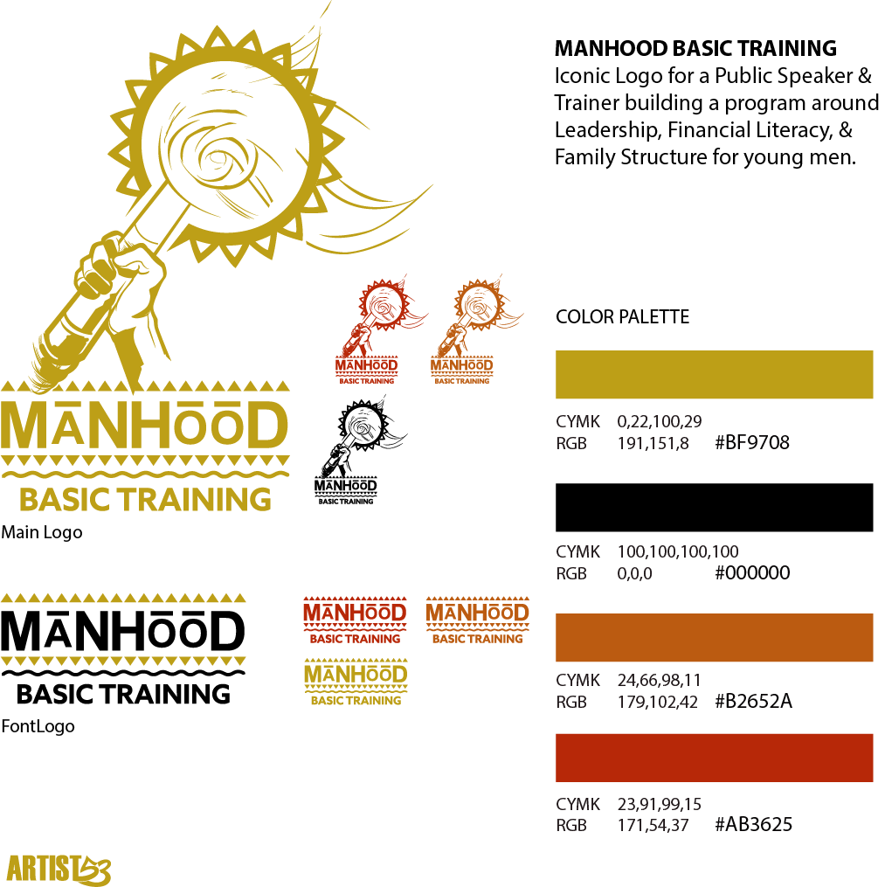

Brand Evolution Case Study
CLIK CLIK BANG
A long-time client relationship evolved from Trinity Telecom into a completely new business: owning and operating a Black-owned firearms store in Arizona. The new identity needed to feel bold, direct and unmistakable while carrying forward the trust built through years of working together.
Back To Logos
01 / Client EvolutionClientCLIK CLIK BANG LocationArizona CategoryRetail Brand Identity ServicesLogo + Marketing Design
A New Business Chapter
From Trinity Telecom To CLIK CLIK BANG
The relationship began years earlier with Trinity Telecom. When the client moved into a new retail venture in Arizona, ARTIST53 came along for the next chapter—building a new visual identity suited to a completely different market and physical storefront.
02 / Identity
The Mark
Built To Be Recognized
The identity uses a compact interlocking mark with strong circular geometry, paired with a tall, aggressive wordmark. The system was built to work both as a standalone symbol and as a complete retail logo across signage, digital graphics and promotional material.
Primary Mark

Full Identity
03 / Real-World Application

Storefront Branding
From Screen To Signage
A strong identity has to survive outside the design file. On the storefront, the logo becomes a physical brand landmark—readable in daylight and recognizable when illuminated after dark.
Daytime Storefront
Illuminated Signage
04 / Launch Marketing
Opening Day Campaign
Taking The Brand To Market
The visual identity extended into opening-day marketing, bringing the logo, typography, photography and promotional information together as one branded campaign. That gave the new storefront and the customer-facing advertising the same visual voice.